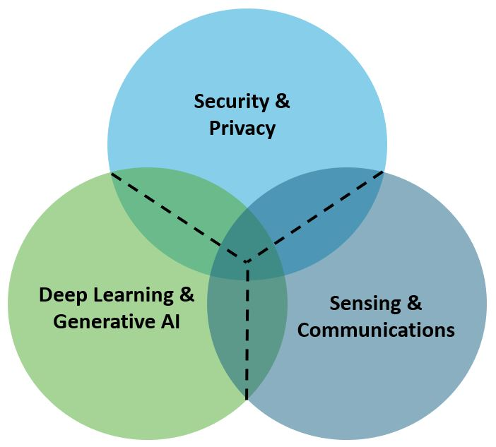

Research Overview

My research leverages advanced techniques, such as cryptography, sensing, communications, deep learning, and generative AI, with an emphasis on addressing real-world challenges in cyber-physical systems through theoretical, numerical, and experimental approaches. The inherently multidisciplinary nature of my research aims to seamlessly integrate the physical world (IoT smart devices, machines, sensors, actuators, and vehicles) with the digital world (computing, communications, control, and intelligence), thereby advancing the capabilities of cyber-physical systems toward smarter, more secure, and more connected systems and lifestyles. My research interests include, more specifically:
The following provides a summary of major contributions from my ongoing and past research, with representative publications. The full list of publications can be found here. Ongoing Works: Post Doctoral Research
◆ Future transportation systems are expected to be transformed by connected vehicles, offering greatly improvements in traffic efficiency, mobility, and road safety. However, realizing these benefits requires not only seamless connectivity but also robust security to ensure the reliable exchange of extensive sensor data and contextual information among vehicles, infrastructures, and surrounding environments. Hence, the integration of advanced communication and sensing technologies is essential for paving the way toward next-generation autonomous mobility. To this end, this research aim to develope in-vehicle network security and practical end-to-end security-aware mechanism for connected vehicles by leveraging edge computing and advanced cryptographic techniques. Publications
PhD Research◆ In my PhD dissertation, I have presented four key contributions. First, it provides a comprehensive performance assessment of mmWave-enabled vehicle-to-vehicle communications, evaluating achievable throughput, latency, and reliability metrics. Second, a deep learning based solution is presented so that the optimal beams having sufficient mmWave received powers can be estimated by utilizing multi-modality sensing data. Third, a transformer-based framework is introduced, where multi-head cross-modal attention is utilized to capture dependencies and correlations between different sensing modalities, and subsequently fused the multimodal features to improve beam prediction. Finally, it develops an attack-defense tree methodology to systematically evaluate cyber security vulnerabilities in connected vehicles. Together, these contributions aim to advance the design of safe, intelligent, and resilient transportation systems by bridging reliable connectivity with strengthened security mechanisms for connected vehicles. ◆ Dissertation: On Enabling Multi-Modal Sensing and Security Techniques for Connected Vehicles Publications
Master's Research◆ My Master's research in the Internet of Things (IoT) considers designing secure, privacy-preserving, and efficient approaches for IoT smart devices operating in distributed and dynamic environments. I have contributed to developing cryptographic and blockchain-assisted solutions that ensure secure data sharing, searching, and targeted message dissemination. By integrating applied cryptography with permissioned blockchain and edge computing, my work addresses key challenges such as confidentiality, integrity, authenticity, and resilience against cyber threats, while maintaining scalability and low latency. Besides, I contribute to emerging wireless technologies for IoT applications, exploring key opportunities and challenges. Publications
|